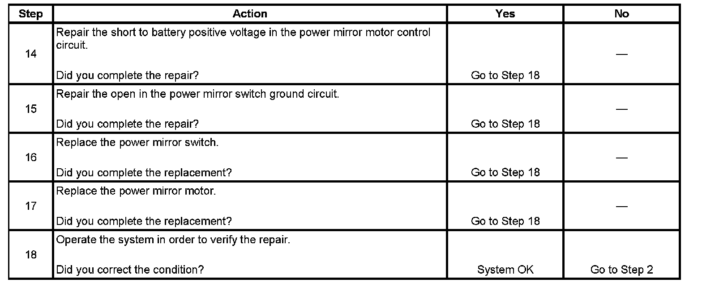

Power Mirrors Inoperative
POWER MIRRORS INOPERATIVE
DIAGNOSTIC AIDS
- If the power mirror system fuse is open and a short to ground in the battery positive voltage circuit is not detected, the fault could be a short to ground in one of the power mirror control circuits. This would open the power mirror system fuse when the mirror switch is pressed.
- If both power mirrors are inoperative on one or more axis, the most probable cause is a power mirror switch failure. However, the fault could be an open circuit on 2 or more of the power mirror control circuits.
- The power mirror assembly is equipped with a pigtail harness and is not serviceable. If an internal open or short is detected in the power mirror assembly, replace the power mirror assembly.
TEST DESCRIPTION
Step 1 - Step 13:
Step 14 - Step 18:

The numbers below refer to the step numbers on the diagnostic table.
6. This step tests the integrity of both the mirror control circuits and the power mirror switch. If both power mirrors are inoperative on one or more axis, begin testing by disconnecting one of the power mirrors, if an open circuit is detected and repaired for that power mirror, repeat step 6 for the other power mirror.
7. This step tests the integrity of the battery positive voltage circuit, not the fuse.